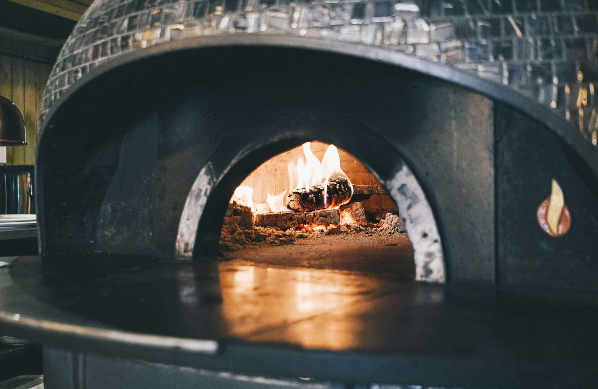

A Margherita, taken apart

A Margherita has nowhere to hide. There is San Marzano tomato, fior di latte, a few leaves of fresh basil and extra virgin olive oil, and every one of them has to be right for the pizza to work.
The tomatoes are crushed by hand and barely seasoned. The fior di latte arrives fresh each week and is torn, not sliced, so it melts in uneven pools. The flour comes from a mill outside Naples, and the dough is stretched by hand rather than rolled, so the edge keeps its air.
If you are new to us, start here. If you come often, order it next to the Marinara, which is the same pizza with no cheese, and taste what the cheese changes. Both are on the menu every day we are open, Tuesday through Sunday.